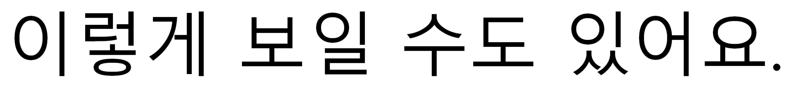

By now you’ll have noticed that Hangul seems a lot boxier (sort of like Chinese) than most other alphabet-based languages. This is because Hangul is a kind of hybrid between character-based writing systems and alphabet-based writing systems. It takes the best of both worlds while also minimizing many of the difficulties inherent in both systems. We’ve already told you that Hangul is the Korean alphabet, but unlike most western alphabets the letters in Hangul are no good on their own. Hangul is made up of blocks of letters. Each block forms one character.
What does that mean? Well in English, words are written by stringing letters together followed by spaces to separate words. Now imagine if instead of organizing letters this way, we put them into square blocks. Each block would be pronounced as one syllable, and spaces between words would be maintained. What would the result be like? Well...

Now compare that with the same phrase in Korean.
You can see that English letters have to be awkwardly stretched and squashed for each syllable to fit into one imaginary square block. At first glance, a system like this may seem cumbersome but there are clear advantages. First of all, putting letters into blocks allows more letters fit into a smaller space. It does take a bit more vertical real estate than regular English writing, but it saves a ton of space horizontally. Secondly, you don’t have to guess how many syllables a word has, as each block represents exactly one syllable. That means pronunciation is simplified. Sound like a decent system? Yeah, King Sejong thought so too.
Unlike English writing, King Sejong designed Korean from the ground up to fit into these character blocks. As a result, Korean letters were made to stretch and warp into shape, depending on their position in the block. Given that these letters are meant to change shape, their design lends itself to the task.
Now let’s get started learning the actual letters and their pronunciation, but remember, at least one consonant and one vowel must be combined to make a valid block. Next chapter I’ll also be showing you how multiple consonants and multiple vowels all combine. For this chapter however, we’ll stick to one vowel sound while I teach you the consonants.